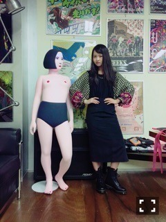
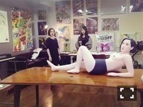

| 2015/11 07 Sat | もっと撮って。677回目 |

服に柄が欲しいところから
始まりいろいろ探した結果
花柄に溢れている！！
色味が渋いのが揃いました。
年代物の服や物に
やっぱり惹かれる。
今より重たくて色落ちしたレザー、
錆びて剥げた鉄、木！
錆びたランプを手に入れた！
以前から使ってるランプも
錆びさせる予定(´* >*｀)できるかな

今月号のMdN、
お相手はシシヤマザキさん！
ルミネCMの原画を
見せていただいた、、！
シシさんのつくるアニメーションの
色使いとテンポ感、
そして展開がシュール、
セクシーで何度も見たくなる。
手描きで残る絵の具の濁り、
アニメに動きが出て素敵。
そして、密かに
チェックしていたMASKのこと。
いろいろお話聞けてよかったなあ
今月号は他にも
シシさん特集があるようです！

あ、ほんもの
ちなみに今月号の私服、
トップスがほんとは
ワンピースなのですが、
母からタイのお土産です(´* >*｀)
タイトスカートにINしてます。
こっちのシルエットのが好き。
お袖がボリュームあって可愛いんだ
足元はY's×マーチン(´* >*｀)
表紙に絶命展って書いてる！
うわあうわあ！
今月号も盛りだくさんです！
MELANTRICK HEMLIGHET
のフォトブック『MIRROR』の
撮影をしました。
お世話になっている
スタイリストの優哉さんが
手掛けるブランドです。
まさか本に載れるなんて！
あっという間に時間が過ぎた。
落ち着かなくて
終始うずうずしてました。
幸せな現場でした、、
またいつかぜひ！！
残り誕生日までの4ヶ月でやっておきたいことある？
家具をすべて揃えたい
最近読んでいるｵｽｽﾒの本は何?
漫画ですが、今日マチ子さん！
チビッコたちとよみたいんやけど
オススメの
絵本ってありますか？
バムとケロ、くまのがっこう
カレーに納豆いれる？？
カレーライスには
福神漬けからっきょうか
サワークリームか納豆です！
定番(^o^)おなかすいた(^o^)
まりか
コメント(531)
2015/11/07 19:48